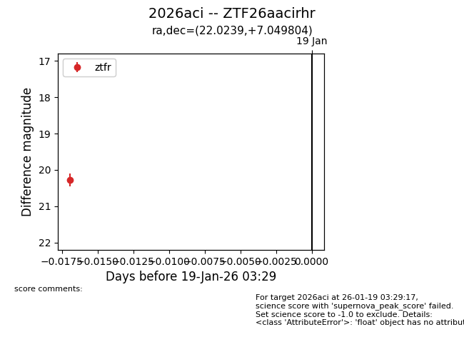
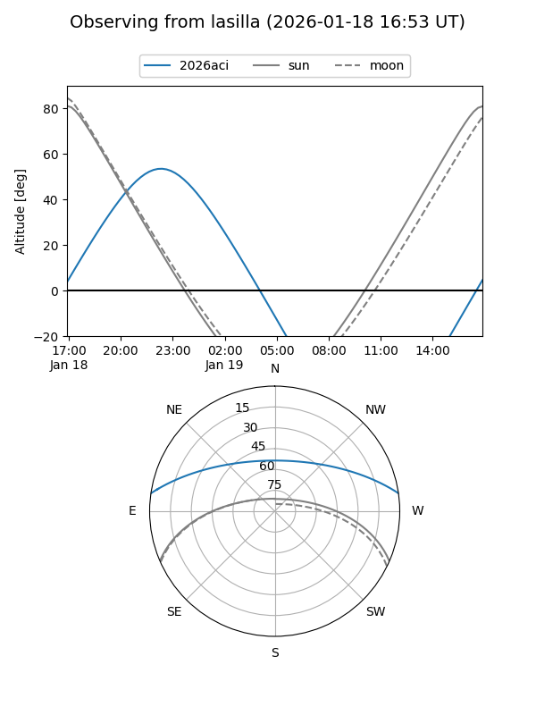
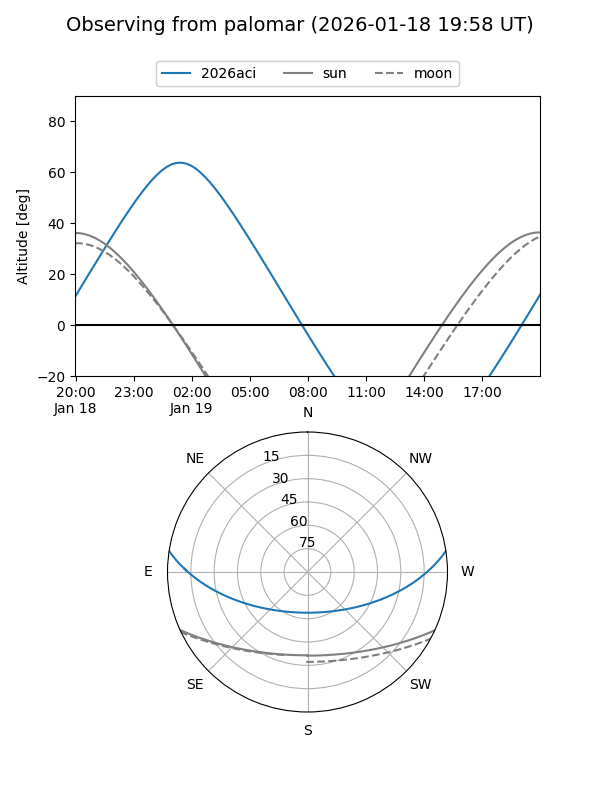

2026aci
Target 2026aci at 2026-01-21 03:31
Aliases and brokers:
FINK: link
Lasair: link
ALeRCE: link
TNS: link
YSE: link
alt names
ZTF26aacirhr (ztf,fink_ztf)
2026aci (tns,yse)
Coordinates:
equatorial (ra, dec) = 22.0239,+7.04980
equatorial (HMS+DMS) = 01:28:05.75,+07:02:59.30
galactic (l, b) = (138.8021,-54.68846)
Flags:
Photometry:
last ztfr=20.28
1 ztfr detections
Lightcurve

Visibility


Additional plots